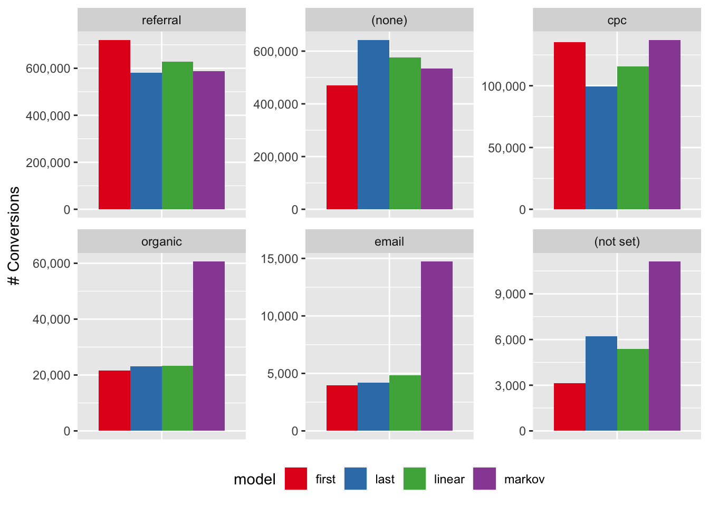

Conversion paths
Summary
TODO: add links to most important sections below.
Data exploration
In this section I would like to explore the conversion paths file
- take a look at the data quality
- check the distribution of the conversion path lenghts - check what is the most usual length of touchpoints that customers go through before converting
- and lastly - fit a Markov Model and see what the transition network between the different mediums shows. One interesting thing I expect to come out is the Removal Effects that this model provides - which would be the unbiased / more objective importance weights of the mediums in the overall customer journey
- and compare this to the results I got from the analysis of the country / medium file
Conversions are all 1s ?
Are all conversions a single 1 or is there variety in the data ?
Seems like most of conv. are 1s but perhaps there are some other values ?
Code
summary(conv_paths_raw$conversions) Min. 1st Qu. Median Mean 3rd Qu. Max.
1.0 1.0 1.0 36.4 1.0 446425.0 The summary shows that most are 1s but there are other values at the right tail end of the distribution. There are no 0 conversions, which is good.
I can convert them to integer numbers.
Code
conv_paths <- conv_paths_raw |>
mutate(conversions = as.integer(conversions))Value always in EUR ?
Separate the EUR from the numeric value and split them separately to check how they look like.
Code
conv_paths <- conv_paths |>
mutate(
value_splits = str_split(value, " ", n = 2),
currency = map_chr(value_splits, first),
value = {
map_chr(value_splits, nth, n = 2) |>
str_remove_all(",") |>
parse_number()
},
value_splits = NULL
)Is the currency of the value always in EUR ?
Code
conv_paths |> count(currency)# A tibble: 1 × 2
currency n
<chr> <int>
1 EUR 37332Yes, great I can safely drop this.
Code
conv_paths <- conv_paths |> select(-currency)How does value look like ?
Code
# 1
summary(conv_paths$value) Min. 1st Qu. Median Mean 3rd Qu. Max.
0 93 229 10665 548 127337281 The summary shows that value does have 0s , half of the data values are <= 229 and the right end of the tail looks like it is quite long / heavy.
How does this right-end of the tail look like ?
Code
quantile(conv_paths$value, seq(0.9, 1, 0.01)) |> comma() 90% 91% 92% 93% 94%
"1,259" "1,377" "1,519" "1,723" "1,993"
95% 96% 97% 98% 99%
"2,370" "2,930" "3,889" "6,498" "15,920"
100%
"127,337,281" Looks like we have suuuper heavy tail with some extreme values in the top percentiles.
I would like to see the top 10 medium paths ordered by descending conversion value.
Code
conv_paths |>
slice_max(order_by = value, n = 10) |>
datatable(options = list(dom = "t"))It looks like there are some “power” paths that provide massive part of the conversions / value.
Given the insights from the country/medium analysis - it’s not surprising that the single referral touchpoint is right at the top - with other paths where referral plays a role being also in the top 10.
Seeing also (none) and cpc in the top 10 makes me more curious about the Markov Model - I expect them to gain on importance in that overall view (as compared to the last non-direct view of the country/medium file).
One more thing I would like to check is the relationship of (conversion, value) pairs.
I will start with a simple scatterplot of their relationship.
Code
# how do conversions-value pairs look like ?
ggplot(conv_paths, aes(conversions, value)) + geom_point()
Not entirely sure what to think of this big hole in the middle, at first glance it looks bit unrealistic ?
Wondering if some scale-changes would show something ? Will try to log both axis
Code
ggplot(conv_paths, aes(conversions, value)) +
geom_point() +
scale_x_log10() +
scale_y_log10()Warning: Transformation introduced infinite values in continuous y-axis
Hm, ok … what catches the attention is the last warning about infinite values. This indicates that there are 0 value conversions ?
Code
conv_paths |>
filter(value < 1) |>
datatable(options = list(dom = "t"))Yes that is the case indeed … not sure if this is a “hiccup” in the data / export ?
What percentage of the rows have 0 value ?
Code
conv_paths |>
count(value == 0) |>
mutate(perc = n / sum(n))# A tibble: 2 × 3
`value == 0` n perc
<lgl> <int> <dbl>
1 FALSE 35743 0.957
2 TRUE 1589 0.0426about 4% of the rows are 0 value. How about in terms of conversions - what % of the conversions (which are all >= 1) have 0 value ?
Code
conv_paths |>
group_by(value == 0) |>
summarise(n = sum(conversions)) |>
mutate(perc = n / sum(n))# A tibble: 2 × 3
`value == 0` n perc
<lgl> <int> <dbl>
1 FALSE 1356737 0.999
2 TRUE 1617 0.00119Since it’s only 4% of the data and 0.12% in terms of conversions then i think it’s safe to simply remove these rows. It does not make sense to me to have conversion = 1 & value = 0 - perhaps it’s a cancellation ? In any case it shouldn’t cause any problems I assume.
Code
conv_paths <- conv_paths |> filter(value > 0)What are all possible mediums represented ?
Last thing i would like to check all the different mediums reprensented in this data export
Code
mediums <- conv_paths |>
select(medium_path) |>
separate_wider_delim(
medium_path,
delim = " > ",
too_few = "align_start",
names_sep = "_"
)
mediums |> map(unique)|> flatten_chr() |> unique() |> sort() [1] "(none)" "(not set)" "ads"
[4] "affiliate" "app" "article"
[7] "banner" "browser-notification" "button"
[10] "channel" "company_profile" "cpc"
[13] "Customer Service" "Customer+Service" "display"
[16] "email" "feed" "mailing_gui"
[19] "metasearch_api" "mobile-notification" "navbar"
[22] "organic" "paid-social" "peoplebasedmarketing"
[25] "ppd" "promocode" "referral"
[28] "s-cpm" "search-banner" "slack"
[31] "social" "Social" "social-media"
[34] "stories_banner" "test" "tram"
[37] "website" "whitelabel" "youtube"
[40] "zalo" From a first look it looks like the same mediums as in the country/medium file, nothing super interesting here.
Distribution of path lenghts
What might be also interesting to look at is the distribution of path lengths and - out of curiosity - i want to check what is the most common first medium touchpoint usually.
Maybe an idea would be to come up with some simple rules for buckets and see if these 2 differ
- the bulk of the path lenghts distribution would be centeres around some value
Le.g. - however - perhaps the bulk of the value is brought by another bucket e.g.
L + 10i.e. the bulk of the conversions are aroundLbut they are lower value conversions than bucketL + 10
These are some of the questions I expect to perhaps show some interesting things.
How does the distribution of path lengths look like ?
Code
path_lengths <- conv_paths |>
select(medium_path) |>
mutate(
path_splits = str_split(medium_path, " > "),
path_length = map_int(path_splits, length),
first_touchpoint_medium = map_chr(path_splits, first)
) |>
select(path_length, first_touchpoint_medium)
ggplot(path_lengths, aes(path_length)) + geom_histogram(binwidth = 1)
It’s heavily right skewed with extremely long path lengths - apparently conversion paths of > 100 steps are also possible, although very unlikely. I want to zoom in around the peak of the distribution and see where it lies.
Code
ggplot(path_lengths, aes(path_length)) +
geom_histogram(binwidth = 1) +
xlim(0, 50)Warning: Removed 807 rows containing non-finite outside the scale range
(`stat_bin()`).Warning: Removed 2 rows containing missing values or values outside the scale range
(`geom_bar()`).It is centered somewhere around 7-9.
How does the right end of the distribution look like ?
Code
quantile(path_lengths$path_length, probs = seq(0.50, 1.00, 0.05)) 50% 55% 60% 65% 70% 75% 80% 85% 90% 95% 100%
10 11 12 13 14 16 18 21 26 36 364 - half of the conversions take 10 touchpoints to convert
- 90% of the conversions take <= 26 touchpoints to convert
What is the most common first medium ? This one I picked out of curiosity to see how does the usual customer journey starts.
Code
path_lengths |>
count(first_touchpoint_medium, sort = T) |>
mutate(perc = percent_format(accuracy = 0.001)(n / sum(n)))# A tibble: 23 × 3
first_touchpoint_medium n perc
<chr> <int> <chr>
1 referral 15371 43.004%
2 (none) 9703 27.147%
3 cpc 6511 18.216%
4 organic 2282 6.384%
5 email 869 2.431%
6 tram 590 1.651%
7 (not set) 269 0.753%
8 s-cpm 47 0.131%
9 search-banner 44 0.123%
10 button 12 0.034%
# ℹ 13 more rowsAgain perhaps unsurprisingly as I saw in the country/medium analysis - referral is the 1st touchpoint for people ~45% of the time being the “power” medium drivers of customers - with (none) and cpc following behind.
Are there any duplicate rows in the data ?
Code
conv_paths$medium_path |> duplicated() |> sum()[1] 4743yes, so this means i have multiple rows with same medium path and different conversions and values, so I need to re-group-and-summarise by medium path the duplicates.
Code
conv_paths <- conv_paths |>
group_by(medium_path) |>
summarise(across(c(conversions, value), sum)) |>
ungroup()At this point I am content with the checks, cleaning and format of the file.
Markov model
I would like to fit a order-1 Markov Model to the conversion paths.
Code
library("ChannelAttribution")ChannelAttribution 2.0.7*** Looking to run more advanced attribution? Try ChannelAttribution Pro for free! Visit https://channelattribution.io/productCode
markov_mod <- markov_model(
conv_paths,
var_path = "medium_path",
var_conv = "conversions",
var_value = "value",
out_more = T
)
Number of simulations: 100000 - Convergence reached: 1.76% < 5.00%
Percentage of simulated paths that successfully end before maximum number of steps (357) is reached: 99.99%
[1] "*** Looking to run more advanced attribution? Try ChannelAttribution Pro for free! Visit https://channelattribution.io/product"Code
markov_mod$result
channel_name total_conversions total_conversion_value
1 (none) 538702.93676 162942433.97
2 tram 8043.30652 2349856.61
3 referral 583785.17331 173030298.37
4 email 17973.31457 5169617.42
5 website 297.90024 54663.33
6 organic 58388.44734 16505950.77
7 cpc 137232.71126 34374443.59
8 navbar 1290.90105 399212.15
9 (not set) 9830.70797 2982532.56
10 peoplebasedmarketing 198.60016 52238.20
11 Social 99.30008 35531.85
12 social 0.00000 0.00
13 button 198.60016 57189.86
14 ads 0.00000 0.00
15 display 0.00000 0.00
16 s-cpm 297.90024 69946.85
17 affiliate 99.30008 44702.06
18 article 0.00000 0.00
19 browser-notification 0.00000 0.00
20 social-media 0.00000 0.00
21 ppd 0.00000 0.00
22 promocode 99.30008 28594.93
23 mailing_gui 0.00000 0.00
24 search-banner 99.30008 21013.68
25 mobile-notification 0.00000 0.00
26 whitelabel 0.00000 0.00
27 channel 0.00000 0.00
28 slack 0.00000 0.00
29 feed 0.00000 0.00
30 company_profile 99.30008 28594.93
31 test 0.00000 0.00
32 stories_banner 0.00000 0.00
33 youtube 0.00000 0.00
34 app 0.00000 0.00
35 banner 0.00000 0.00
36 paid-social 0.00000 0.00
37 Customer Service 0.00000 0.00
38 Customer+Service 0.00000 0.00
39 metasearch_api 0.00000 0.00
40 zalo 0.00000 0.00
$transition_matrix
channel_from channel_to transition_probability
1 (start) 1 3.466685e-01
2 (start) 9 2.314376e-03
3 (start) 11 3.685313e-06
4 (start) 14 1.474125e-06
5 (start) 34 2.211188e-06
6 (start) 35 2.211188e-06
7 (start) 13 1.031888e-05
8 (start) 30 2.211188e-06
9 (start) 7 9.972235e-02
10 (start) 15 1.474125e-06
11 (start) 4 2.938668e-03
12 (start) 25 7.370625e-07
13 (start) 8 5.896500e-06
14 (start) 6 1.595740e-02
15 (start) 36 7.370625e-07
16 (start) 10 1.768950e-05
17 (start) 21 4.422375e-06
18 (start) 3 5.310852e-01
19 (start) 16 7.591744e-05
20 (start) 24 1.186671e-04
21 (start) 2 1.060633e-03
22 (start) 5 3.685313e-06
23 (start) 40 1.474125e-06
24 1 (conversion) 8.260123e-01
25 1 2 6.993762e-03
26 1 3 1.006014e-01
27 1 4 1.249465e-02
28 1 6 1.482333e-02
29 1 7 3.113182e-02
30 1 8 1.451730e-03
31 1 9 5.238571e-03
32 1 10 9.643908e-05
33 1 11 1.543025e-05
34 1 5 6.287828e-04
35 1 12 5.143418e-06
36 1 14 2.571709e-06
37 1 15 2.828880e-05
38 1 13 5.529174e-05
39 1 16 1.864489e-04
40 1 17 1.337289e-04
41 1 18 2.571709e-06
42 1 19 2.571709e-06
43 1 20 2.571709e-06
44 1 23 1.285854e-06
45 1 24 2.957465e-05
46 1 25 1.285854e-06
47 1 21 1.157269e-05
48 1 26 1.285854e-06
49 1 28 5.143418e-06
50 1 30 1.800196e-05
51 1 31 1.285854e-06
52 1 32 1.285854e-06
53 1 29 1.285854e-06
54 1 22 1.543025e-05
55 1 36 2.571709e-06
56 1 39 2.571709e-06
57 2 1 4.426156e-01
58 2 (conversion) 6.476429e-02
59 2 3 3.339297e-01
60 2 4 1.771178e-02
61 2 8 3.757044e-03
62 2 6 3.703372e-02
63 2 7 9.687807e-02
64 2 14 8.945344e-05
65 2 9 1.878522e-03
66 2 5 1.073441e-03
67 2 17 2.683603e-04
68 3 1 2.653086e-01
69 3 (conversion) 6.881318e-01
70 3 6 1.166924e-02
71 3 9 6.118109e-03
72 3 7 1.759876e-02
73 3 4 6.504790e-03
74 3 13 2.823013e-04
75 3 5 2.799290e-04
76 3 2 3.258326e-03
77 3 17 1.114971e-04
78 3 15 2.135051e-05
79 3 8 3.344914e-04
80 3 21 8.302978e-06
81 3 11 7.116838e-06
82 3 10 1.897824e-05
83 3 22 3.558419e-05
84 3 29 1.186140e-06
85 3 16 6.998224e-05
86 3 30 1.541982e-04
87 3 33 2.372279e-06
88 3 24 7.947136e-05
89 3 12 2.372279e-06
90 3 37 1.186140e-06
91 4 5 1.682007e-03
92 4 1 4.080736e-01
93 4 (conversion) 1.954866e-01
94 4 6 3.807877e-02
95 4 7 5.569313e-02
96 4 9 4.812409e-03
97 4 3 2.793066e-01
98 4 2 1.378311e-02
99 4 8 2.009064e-03
100 4 15 4.672242e-05
101 4 11 4.672242e-05
102 4 10 2.803345e-04
103 4 16 1.868897e-04
104 4 24 2.336121e-04
105 4 30 9.344484e-05
106 4 21 9.344484e-05
107 4 13 9.344484e-05
108 5 4 3.501094e-02
109 5 1 3.107221e-01
110 5 3 3.577681e-01
111 5 6 5.142232e-02
112 5 (conversion) 1.039387e-01
113 5 7 9.190372e-02
114 5 8 2.297593e-02
115 5 2 2.078775e-02
116 5 9 4.376368e-03
117 5 32 1.094092e-03
118 6 1 2.982896e-01
119 6 (conversion) 2.511453e-01
120 6 3 1.231838e-01
121 6 4 8.235525e-03
122 6 9 4.908591e-03
123 6 2 3.872333e-03
124 6 7 3.078450e-01
125 6 17 1.090798e-04
126 6 8 1.265326e-03
127 6 18 1.090798e-05
128 6 16 1.418037e-04
129 6 5 4.581352e-04
130 6 27 1.090798e-05
131 6 10 2.181596e-05
132 6 21 2.726995e-04
133 6 24 8.726384e-05
134 6 14 2.181596e-05
135 6 13 5.453990e-05
136 6 22 1.090798e-05
137 6 37 1.090798e-05
138 6 15 4.363192e-05
139 7 1 1.857678e-01
140 7 6 2.265423e-01
141 7 (conversion) 4.807651e-01
142 7 4 5.140891e-03
143 7 3 8.464594e-02
144 7 9 1.185207e-02
145 7 8 7.440764e-04
146 7 13 1.932666e-05
147 7 2 3.913648e-03
148 7 21 9.663330e-06
149 7 22 3.382165e-05
150 7 5 3.720382e-04
151 7 24 1.932666e-05
152 7 28 4.831665e-06
153 7 17 6.281164e-05
154 7 10 1.932666e-05
155 7 14 1.932666e-05
156 7 11 2.898999e-05
157 7 30 4.831665e-06
158 7 34 4.831665e-06
159 7 16 1.932666e-05
160 7 12 4.831665e-06
161 7 26 4.831665e-06
162 8 (conversion) 1.162147e-01
163 8 1 4.034311e-01
164 8 6 8.411732e-02
165 8 3 2.357499e-01
166 8 7 9.241837e-02
167 8 4 2.767017e-02
168 8 9 3.873824e-03
169 8 2 2.490315e-02
170 8 33 5.534034e-04
171 8 5 9.407858e-03
172 8 32 1.106807e-03
173 8 13 5.534034e-04
174 9 (conversion) 4.023048e-01
175 9 3 2.731452e-01
176 9 1 1.796582e-01
177 9 10 1.942250e-04
178 9 6 1.754500e-02
179 9 7 1.175062e-01
180 9 17 9.063835e-04
181 9 16 6.474168e-05
182 9 4 6.279943e-03
183 9 22 1.294834e-04
184 9 8 5.179334e-04
185 9 2 1.553800e-03
186 9 24 1.942250e-04
187 10 1 4.461538e-01
188 10 (conversion) 2.692308e-01
189 10 6 5.384615e-02
190 10 4 6.923077e-02
191 10 3 1.000000e-01
192 10 7 6.153846e-02
193 11 (conversion) 1.333333e-01
194 11 1 5.333333e-01
195 11 3 1.333333e-01
196 11 6 1.000000e-01
197 11 7 1.000000e-01
198 12 13 1.111111e-01
199 12 1 1.111111e-01
200 12 3 4.444444e-01
201 12 7 1.111111e-01
202 12 (conversion) 2.222222e-01
203 13 3 7.443366e-01
204 13 1 1.779935e-01
205 13 7 1.618123e-02
206 13 6 9.708738e-03
207 13 (conversion) 3.559871e-02
208 13 9 9.708738e-03
209 13 12 6.472492e-03
210 14 1 2.727273e-01
211 14 3 9.090909e-02
212 14 2 1.818182e-01
213 14 (conversion) 3.636364e-01
214 14 7 9.090909e-02
215 15 1 3.829787e-01
216 15 3 4.468085e-01
217 15 7 4.255319e-02
218 15 6 8.510638e-02
219 15 4 4.255319e-02
220 16 1 4.832827e-01
221 16 6 4.559271e-02
222 16 3 4.072948e-01
223 16 (conversion) 1.215805e-02
224 16 4 9.118541e-03
225 16 9 3.039514e-03
226 16 7 3.647416e-02
227 16 13 3.039514e-03
228 17 9 6.302521e-02
229 17 (conversion) 3.991597e-01
230 17 1 1.386555e-01
231 17 3 3.319328e-01
232 17 2 1.680672e-02
233 17 7 3.361345e-02
234 17 6 1.680672e-02
235 18 1 6.666667e-01
236 18 6 3.333333e-01
237 19 1 5.000000e-01
238 19 6 5.000000e-01
239 20 1 1.000000e+00
240 21 1 1.568627e-01
241 21 3 1.568627e-01
242 21 6 5.490196e-01
243 21 7 5.882353e-02
244 21 (conversion) 3.921569e-02
245 21 4 3.921569e-02
246 22 9 3.269231e-01
247 22 3 5.192308e-01
248 22 (conversion) 9.615385e-02
249 22 7 5.769231e-02
250 23 1 1.000000e+00
251 24 3 4.944649e-01
252 24 1 1.623616e-01
253 24 7 2.583026e-02
254 24 (conversion) 2.952030e-01
255 24 6 1.845018e-02
256 24 4 3.690037e-03
257 25 1 1.000000e+00
258 26 6 5.000000e-01
259 26 7 5.000000e-01
260 27 7 1.000000e+00
261 28 1 6.000000e-01
262 28 3 2.000000e-01
263 28 6 2.000000e-01
264 29 3 5.000000e-01
265 29 1 5.000000e-01
266 30 (conversion) 6.000000e-02
267 30 3 8.933333e-01
268 30 7 1.333333e-02
269 30 8 2.000000e-02
270 30 1 1.333333e-02
271 31 6 1.000000e+00
272 32 8 2.500000e-01
273 32 4 5.000000e-01
274 32 1 2.500000e-01
275 33 3 1.000000e+00
276 34 (conversion) 7.500000e-01
277 34 1 2.500000e-01
278 35 1 1.000000e+00
279 36 7 6.666667e-01
280 36 1 3.333333e-01
281 37 38 5.000000e-01
282 37 1 5.000000e-01
283 38 7 1.000000e+00
284 39 3 1.000000e+00
285 40 (conversion) 5.000000e-01
286 40 1 5.000000e-01
$removal_effects
channel_name removal_effects_conversion
1 (none) 0.5425
2 tram 0.0081
3 referral 0.5879
4 email 0.0181
5 website 0.0003
6 organic 0.0588
7 cpc 0.1382
8 navbar 0.0013
9 (not set) 0.0099
10 peoplebasedmarketing 0.0002
11 Social 0.0001
12 social 0.0000
13 button 0.0002
14 ads 0.0000
15 display 0.0000
16 s-cpm 0.0003
17 affiliate 0.0001
18 article 0.0000
19 browser-notification 0.0000
20 social-media 0.0000
21 ppd 0.0000
22 promocode 0.0001
23 mailing_gui 0.0000
24 search-banner 0.0001
25 mobile-notification 0.0000
26 whitelabel 0.0000
27 channel 0.0000
28 slack 0.0000
29 feed 0.0000
30 company_profile 0.0001
31 test 0.0000
32 stories_banner 0.0000
33 youtube 0.0000
34 app 0.0000
35 banner 0.0000
36 paid-social 0.0000
37 Customer Service 0.0000
38 Customer+Service 0.0000
39 metasearch_api 0.0000
40 zalo 0.0000
removal_effects_conversion_value
1 5.594933e-01
2 8.068671e-03
3 5.941318e-01
4 1.775085e-02
5 1.876968e-04
6 5.667626e-02
7 1.180311e-01
8 1.370769e-03
9 1.024108e-02
10 1.793696e-04
11 1.220053e-04
12 0.000000e+00
13 1.963721e-04
14 0.000000e+00
15 0.000000e+00
16 2.401756e-04
17 1.534929e-04
18 0.000000e+00
19 0.000000e+00
20 0.000000e+00
21 0.000000e+00
22 9.818603e-05
23 0.000000e+00
24 7.215441e-05
25 0.000000e+00
26 0.000000e+00
27 0.000000e+00
28 0.000000e+00
29 0.000000e+00
30 9.818603e-05
31 0.000000e+00
32 0.000000e+00
33 0.000000e+00
34 0.000000e+00
35 0.000000e+00
36 0.000000e+00
37 0.000000e+00
38 0.000000e+00
39 0.000000e+00
40 0.000000e+00Visualise transition network
Select only the top 10 to de-clutter the network
Code
top_mediums <- markov_mod$result |>
slice_max(order_by = total_conversions, n = 12)Code
# proof that channels are cross-referenced between
# result and transition_matrix
#
# conv_paths |> filter(str_detect(medium_path, "zalo"))
# markov_mod$transition_matrix |> tail(2)
# conv_paths |> head(1)Code
# channel index <-> name
channel_index_to_name <- markov_mod$result |>
as_tibble() |>
select(channel_name) |>
rownames_to_column("channel_index") |>
deframe()
transition_matrix <- markov_mod$transition_matrix |>
as_tibble() |>
mutate(
channel_from = ifelse(
channel_from %in% c("(start)", "(conversion)"),
channel_from,
channel_index_to_name[ channel_from ]
),
channel_to = ifelse(
channel_to %in% c("(start)", "(conversion)"),
channel_to,
channel_index_to_name[ channel_to ]
)
) |>
semi_join(
top_mediums,
join_by(channel_from == channel_name)
) |>
group_by(channel_from) |>
slice_max(order_by = transition_probability, n = 3, with_ties = F) |>
ungroup()Heatmap Transition Matrix
Code
transition_matrix |>
ggplot(aes(x = channel_from, y = channel_to, fill = transition_probability)) +
geom_tile() +
scale_fill_distiller(palette = "RdPu", direction = 1)
Code
cols <- c("#e7f0fa", "#c9e2f6", "#95cbee", "#0099dc", "#4ab04a", "#ffd73e", "#eec73a",
"#e29421", "#e29421", "#f05336", "#ce472e")
t <- max(transition_matrix$transition_probability)
ggplot(transition_matrix, aes(y = channel_from, x = channel_to, fill = transition_probability)) +
theme_minimal() +
geom_tile(colour = "white", width = .9, height = .9) +
scale_fill_gradientn(colours = cols, limits = c(0, t),
breaks = seq(0, t, by = t/4),
labels = c("0", round(t/4*1, 2), round(t/4*2, 2), round(t/4*3, 2), round(t/4*4, 2)),
guide = guide_colourbar(ticks = T, nbin = 50, barheight = .5, label = T, barwidth = 10)) +
geom_text(aes(label = round(transition_probability, 2)), fontface = "bold", size = 4) +
theme(legend.position = 'bottom',
legend.direction = "horizontal",
panel.grid.major = element_blank(),
panel.grid.minor = element_blank(),
plot.title = element_text(size = 20, face = "bold", vjust = 2, color = 'black', lineheight = 0.8),
axis.title.x = element_text(size = 24, face = "bold"),
axis.title.y = element_text(size = 24, face = "bold"),
axis.text.y = element_text(size = 8, face = "bold", color = 'black'),
axis.text.x = element_text(size = 8, angle = 90, hjust = 0.5, vjust = 0.5, face = "plain")) +
ggtitle("Transition matrix heatmap")
Interactive wobbly network
Code
library("visNetwork")
transition_matrix_short <-
transition_matrix |>
arrange(desc(transition_probability)) |>
filter(transition_probability > 0.7) |>
mutate(
label = percent_format(accuracy = 0.01)(transition_probability),
arrows = "to",
dashes = T
) |>
rename(from = channel_from, to = channel_to)
nodes <-
unique(c(transition_matrix_short$from, transition_matrix_short$to)) |>
as_tibble()
nodes <- nodes |>
mutate(id = value) |>
rename(title = value) |>
mutate(label = title)
visNetwork(
nodes,
transition_matrix_short,
height = "1000px",
width = "100%",
)Static plot network
Code
library("igraph")
Attaching package: 'igraph'The following objects are masked from 'package:lubridate':
%--%, unionThe following objects are masked from 'package:dplyr':
as_data_frame, groups, unionThe following objects are masked from 'package:purrr':
compose, simplifyThe following object is masked from 'package:tidyr':
crossingThe following object is masked from 'package:tibble':
as_data_frameThe following object is masked from 'package:fs':
pathThe following objects are masked from 'package:stats':
decompose, spectrumThe following object is masked from 'package:base':
unionCode
top_mediums <- c(
"(start)",
"(conversion)",
"(none)",
"(not set)",
"cpc",
"email",
"organic",
"referral"
)
transition_matrix <- transition_matrix |>
filter(
channel_from %in% top_mediums,
channel_to %in% top_mediums
)
network <- graph_from_data_frame(d = transition_matrix, directed = T)
V(network)$color <- case_match(
V(network)$name,
"(start)" ~ "orange1",
"(conversion)" ~ "blue1",
"(none)" ~ "green1",
"email" ~ "green1",
"navbar" ~ "green1",
"organic" ~ "green1",
"referral" ~ "green1",
"(not set)" ~ "red1",
"cpc" ~ "red1",
"s-cpm" ~ "red1"
)
plot(
network,
layout = layout_with_fr,
edge.arrow.size = 0.2,
edge.curved = F,
edge.label = percent_format(accuracy = 0.1)(E(network)$transition_probability)
)
Removal Effects
Code
as_tibble(markov_mod$removal_effects) |>
arrange(desc(removal_effects_conversion_value))# A tibble: 40 × 3
channel_name removal_effects_conversion removal_effects_conversion_value
<chr> <dbl> <dbl>
1 referral 0.588 0.594
2 (none) 0.542 0.559
3 cpc 0.138 0.118
4 organic 0.0588 0.0567
5 email 0.0181 0.0178
6 (not set) 0.0099 0.0102
7 tram 0.0081 0.00807
8 navbar 0.0013 0.00137
9 s-cpm 0.0003 0.000240
10 button 0.0002 0.000196
# ℹ 30 more rowsHeuristic Model
Code
heuristic_mod <- heuristic_models(
conv_paths,
var_path = "medium_path",
var_conv = "conversions",
var_value = "value"
)[1] "*** Looking to run more advanced attribution? Try ChannelAttribution Pro for free! Visit https://channelattribution.io/product"Code
markov <- markov_mod$result |>
rename(
markov_conversions = total_conversions,
markov_conversion_value = total_conversion_value
)
heuristic <- heuristic_mod |>
rename_with(
.cols = c(everything(), -channel_name),
str_remove,
pattern = "touch_"
)Code
top_mediums <-
markov_mod$result |>
slice_max(order_by = total_conversions, n = 7)
compare_models <-
left_join(markov, heuristic, join_by(channel_name)) |>
semi_join(top_mediums, join_by(channel_name)) |>
select(channel_name, ends_with("value")) |>
rename_with(
.cols = c(everything(), -channel_name),
str_remove,
pattern = regex("(_conversion)*(_value)+")
) |>
pivot_longer(
cols = -channel_name,
names_to = "model",
values_to = "value"
) |>
mutate(
channel_name = fct_reorder(channel_name, value, sum, .desc = T)
)
compare_models |>
ggplot(aes(x = channel_name, y = value, fill = model)) +
geom_col(position = "dodge")
Code
compare_models <-
left_join(markov, heuristic, join_by(channel_name)) |>
semi_join(top_mediums, join_by(channel_name)) |>
select(channel_name, ends_with("conversions")) |>
rename_with(
.cols = c(everything(), -channel_name),
str_remove,
pattern = "_conversions"
) |>
pivot_longer(
cols = -channel_name,
names_to = "model",
values_to = "conversions"
) |>
mutate(
channel_name = fct_reorder(channel_name, conversions, sum, .desc = T)
)
compare_models |>
ggplot(aes(x = channel_name, y = conversions, fill = model)) +
geom_col(position = "dodge")